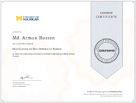
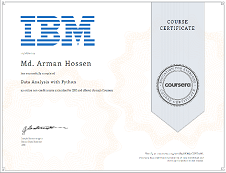
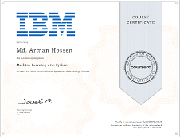
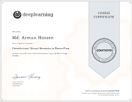

Work Experience
- SnT, University of Luxembourg [Sep 2020 - Present]
- Position: Doctoral Researcher
- Research Group: SigCom
- Line Manager: Dr. Shree Krishna Sharma
- Fiber@Home Limited. [Jan 2016 - Feb 2018]
- Position: Engineer
- Department: Central Operation (NOC), Technology
- Responsibilities:
- 24 × 7 Round the clock duty in NOC for level 1 & 2 supports;
- Layer2/Layer 3/MPLS/VPLS/SDH network Troubleshooting, escalation and reporting;
- Network Health monitoring for core, distribution and access level;
- Fault correlation, transfer, escalation;
- Network fault/incident analysis, reporting and management notification;
- Client complaints and resolution analysis on monthly basis;
- Network related software/hardware upgrade and update;
- System health check and providing support during maintenance and planned work execution;
- Ensure NOC regular activity by being a Network Engineer;
Professional Training
- Basic Switching: Layer-2 concept, Redundancy Protocol, & Link Aggregation.
- Basic Routing: MPLS Basic Concept, MPLS Operation, IPv4, Routing, Forwarding, Some definitions, Policy options, Routing Protocols.
- Basic FTTx: FTTx, GPON, Triple Play Service, General Characteristics, Basic Operation, Some Terminology, Physical Layer Architecture, Network Design & Engineering, OLT & ONT Wavelength, Basic FTTx Network, 1xN PON Splitter, GPON Basic Concept, GPON Operation, GPON Loss Information, GPON Multiplexing Architecture, GPON Auto-Discovery.
- Basic SDH & DWDM: Fundamental of Transmission, Fundamental of PDH, SDH, Principles of SDH, Architecture, Framing Structure, Equipment detail, DWDM or OTN, Principles of WDM, Architecture, Equipment detail.
Professional Development (Online)
- Python Basics University of Michigan
- Python for Everyone University of Michigan
- Introduction to Data Science in Python UM
- AI For Everyone Deeplearning.ai
- What is Data Science? IBM
- Open Source tools for Data Science IBM
- Python for Data Science and AI IBM
- Data Analysis with Python IBM
- Data Visualization with Python IBM
- Machine Learning with Python IBM
- Python Programming DataCamp
- Mathmatics for machine learning Imperial College
- Convolutional Neural Networks in TensorFlow
{kind=link}

{kind=link}

{kind=link}

{kind=link}
